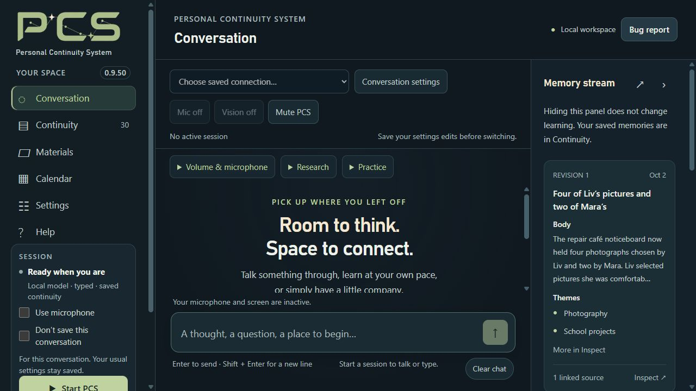

Open the app
Download, extract, start.
Use the complete Windows ZIP. Extract it into a fresh writable folder, then open Start PCS.exe.
Python and ordinary dependencies are included. You do not need a separate Python installation.
Get the Windows download ↗Do not move just the launcher. GitHub’s automatic “Source code” archive is not the Windows app.
Check the download checksum ↗Your saved continuity
Create your vault.
Choose Create a vault in the local page. Set a long, unique passphrase and keep it somewhere safe. PCS cannot recover a forgotten passphrase.
These records live in your encrypted vault. Original Materials and readable exports are separate.
Bringing an existing vault?
Restore your encrypted backup into the empty installation before creating a new vault. A fresh app folder does not automatically find your old data. Follow Updating and restoring below.
Choose your starting route
Connect one model.
Open Settings → Connections. Pick the route you want to use; the instructions below show one at a time.
- Choose Google under Conversation connection.
- Enter your Google API key and keep the suggested compatible model to begin.
- Leave Use microphone off for your first typed conversation.
Provider API access and billing are separate from a consumer chat subscription. Permitted content is sent to Google.
OpenAI
- Choose OpenAI under Conversation connection.
- Enter your OpenAI API key and keep the suggested compatible model to begin.
- Leave Use microphone off for your first typed conversation.
A ChatGPT subscription does not itself provide API access or credits. Permitted content is sent to OpenAI.
Local
- Choose Local on this PC.
- Open Local model & files. For the guided route, choose Gemma 4 12B and its matching runtime.
- Use Download to folder… or Use existing files…, then wait for verification.
Keep model files outside the app folder. Typed Local needs no cloud AI key or speech pack. Model, hardware and voice details ↗
What about Qwen or a custom model?
Get one supported route working first. Custom GGUF setups need compatibility checks. Qwen is an experimental cloud voice route with regional setup and a separate Google/OpenAI memory helper; it does not support typed chat, retained research or saved Practice. Use the app’s Help for its setup.
Make the choices yours
Review, save, and say something.
In Memory & sharing, review these choices. Leave Use microphone off for this first typed check. Then Save settings and choose Start PCS.
“I have a project I keep putting off. Help me work out a useful first step.”
You can also just browse. Library, the Map, manual notebooks and Calendar do not require a running AI.
See the current Conversation screen


After your first conversation
Add one thing when it helps.
Remember and inspect something
Enable saving and learning, then inspect the result in Continuity → Library. Open its sources and correct an interpretation if it misses your meaning. Use Saving & memory health to check pending work. Follow the memory workflow ↗
Use your microphone or a reply voice
Review the selected provider’s audio settings, enable Use microphone, Start, and allow browser access. For Local, select a listening pack and reply engine under Conversation → Local listening & voice. Local voice choices ↗
Read and keep a project notebook
In Documents, open the Materials folder and add a TXT, Markdown, selectable-text PDF or EPUB. Refresh the list while stopped. Read manually, or review the model and selected portion before preparing reading notes. Keep questions and next steps in a notebook.
Try tutoring or save Practice attempts
Proactive help starts Off. In Conversation settings, review its model and inputs to enable optional offers. For tutoring, check the problem and current step, then confirm them before asking for a concept, hint or practice.
For saved Practice, create a Tutoring & practice notebook with a lesson, enable Remember my practice, then use Practice → Choose lesson after Start. Submit answers through the Practice card; ordinary chat and proactive confirmation do not themselves save attempts.
Add a task or event
Open Calendar to create a local task, goal or event. Check its time zone and saved result. Choose Only when I ask if you want AI changes limited to direct Calendar requests. Calendar has no external sync or reminder delivery.
When you finish
Stop, Lock and Quit do different jobs.
Ends conversation and capture.
Closes access to the vault.
Shuts down the host. Wait for “PCS closed.”
Closing the tab alone can leave PCS running. Check saving health before quitting. If saving needs recovery, keep PCS open and follow Recover saving with this vault’s passphrase.
For existing users
Updating and restoring.
Keep a verified encrypted backup and your previous app folder before moving to a new release.
Make the backup before you update
- Leave the vault unlocked, stop the conversation and let background work settle.
- Create an encrypted backup. Wait for the confirmed save and verify it.
- Copy original Materials separately; they are outside the vault.
- Use Quit PCS and wait for PCS closed.
A readable export is useful for reading; it is not a restorable encrypted vault backup.
Move into a fresh app folder
- Extract the complete new Windows ZIP into a new folder.
- Follow
docs/RESTORE_VAULT.mdto restore your encrypted backup before creating a new vault. Alternatively, copy the complete stopped data folder as the guide describes. - Keep Local model and speech files in their existing separate folder, then select them again where needed.
- Open your records and check the restored results before removing any old copy.
Never run two installations against the same data directory. Native encrypted backup/restore supports vaults up to 2 GiB. New saved features may require a newer PCS reader; retain the pre-upgrade backup for rollback.